Random road trip
Undated (photo stamps January 2021)
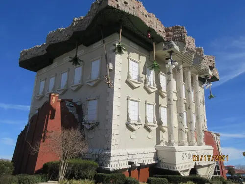
A random road trip down through Mississippi, Alabama, Georgia, and Florida (album description; the Facebook album itself is undated).
Photo stamps on several frames read mid-January 2021. Stops included coastal boardwalks, long bridges, a marina, Ripley’s, and WonderWorks.


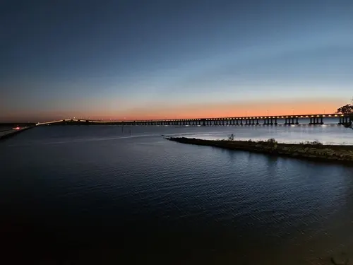

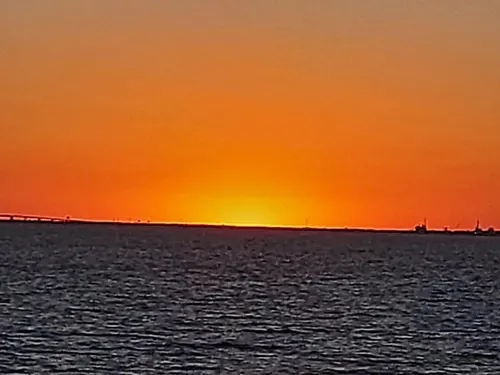

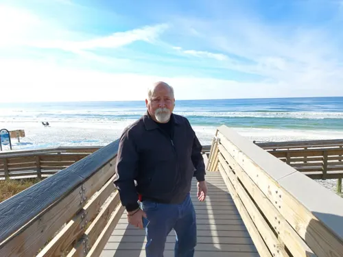

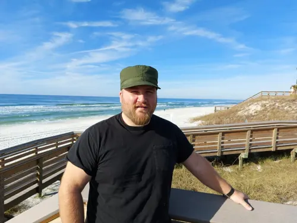

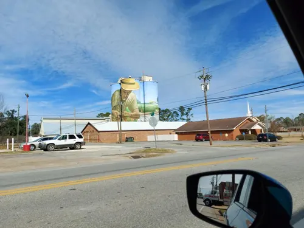

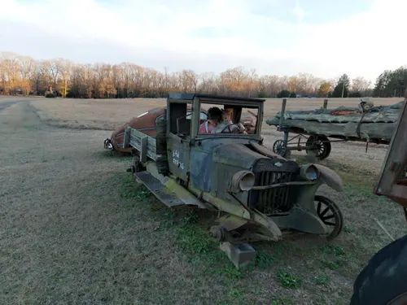

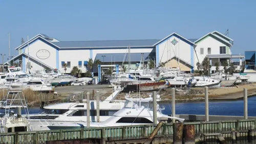

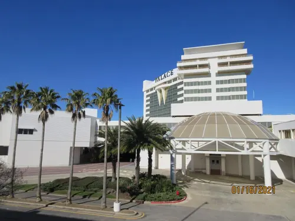

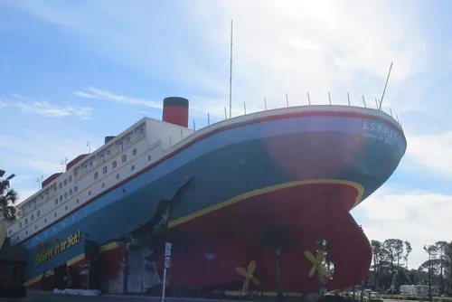

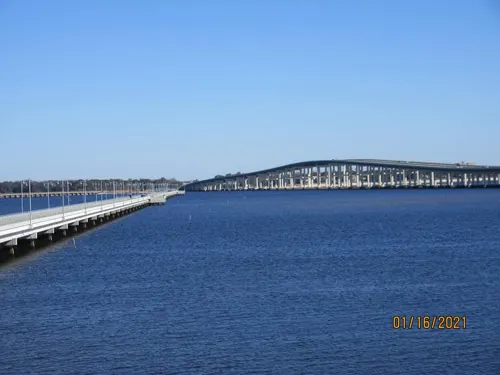

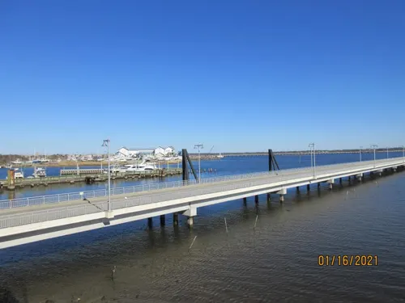

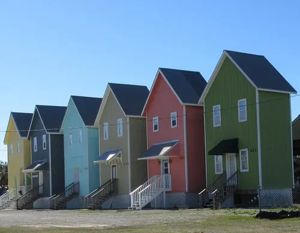

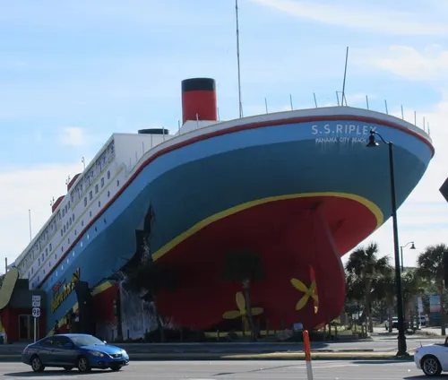

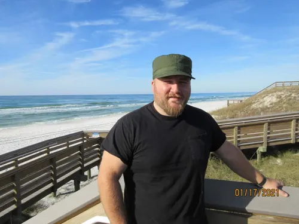